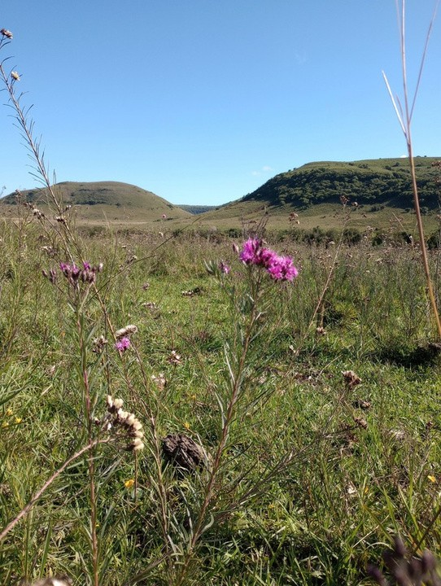

Consultoria ambiental · Pampa & Mata Atlântica
Recuperar o que foi degradado. Proteger o que ainda resiste.
A Garupá é uma consultoria ambiental especializada em licenciamento, recuperação de áreas degradadas e conservação da biodiversidade nos biomas Pampa e Mata Atlântica, no Rio Grande do Sul.
